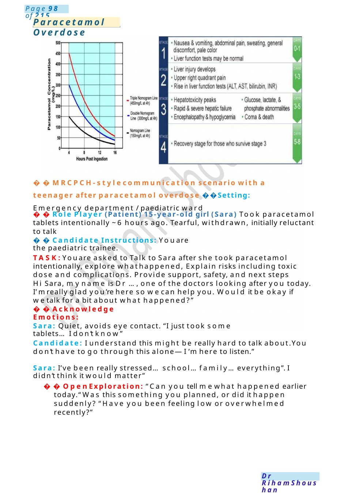
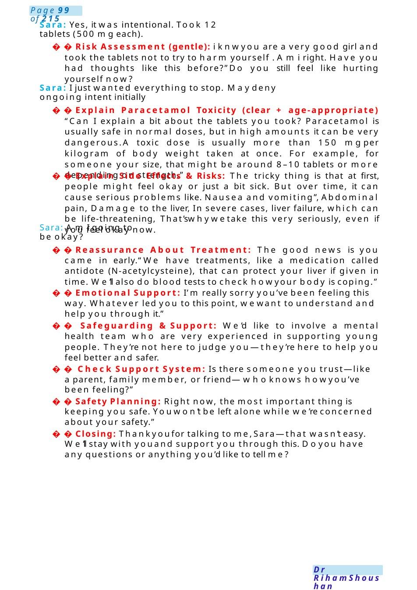

Paracetamol Overdose
MRCPCH-stylecommunication scenario with a teenager after paracetamol overdose Setting: Emergency department / paediatric ward Role Player (Patient) 15-year-old girl (Sara) Took paracetamol tablets intentionally ~6 hours ago. Tearful, withdrawn, initially reluctant to talk
Scenario Summary
MRCPCH-stylecommunication scenario with a teenager after paracetamol overdose Setting: Emergency department / paediatric ward Role Player (Patient) 15-year-old girl (Sara) Took paracetamol tablets intentionally ~6 hours ago. Tearful, withdrawn, initially reluctant to talk
Full Original Scenario

Paracetamol Overdose
MRCPCH-stylecommunication scenario with a teenager after paracetamol overdose Setting: Emergency department / paediatric ward
Role Player (Patient) 15-year-old girl (Sara) Took paracetamol tablets intentionally ~6 hours ago. Tearful, withdrawn, initially reluctant to talk
Candidate Instructions: Youare the paediatric trainee.
TASK:Youare asked to Talk to Sara after she took paracetamol intentionally, explore whathappened, Explain risks including toxic dose and complications. Provide support, safety, and next steps
Hi Sara, myname is Dr ...,one of the doctors looking after you today. I’mreally glad you’re here so wecan help you. Would it be okay if wetalk for a bit about what happened?”
Acknowledge Emotions:
Sara: Quiet, avoids eye contact. “I just took some tablets...I don’t know”
Candidate: I understand this might be really hard to talk about.You don’t have to go through this alone—I’m here to listen.”
Sara: I’ve been really stressed...school... family... everything”. I didn’t think it would matter”
Open Exploration: “Can you tell mewhat happened earlier today.“Was this something you planned, or did it happen suddenly? “Have you been feeling low or overwhelmed recently?”

Sara: Yes, it was intentional. Took 12 tablets (500 mgeach).
Risk Assessment (gentle): i knwyou are a very good girl and took the tablets not to try to harm yourself . Ami right. Have you had thoughts like this before?”Do you still feel like hurting yourself now?
Sara: I just wanted everything to stop. Maydeny ongoing intent initially
Explain Paracetamol Toxicity (clear + age-appropriate) “Can I explain a bit about the tablets you took? Paracetamol is usually safe in normal doses, but in high amounts it can be very dangerous.A toxic dose is usually more than 150 mgper kilogram of body weight taken at once. For example, for someone your size, that might be around 8–10 tablets or more depending on strength.”
Explain Side Effects &Risks: The tricky thing is that at first, people might feel okay or just a bit sick. But over time, it can cause serious problems like. Nausea and vomiting”, Abdominal pain, Damage to the liver, In severe cases, liver failure, which can be life-threatening, That’swhywetake this very seriously, even if you feel okay now.
Sara: AmI going to be okay?
Reassurance About Treatment: The good news is you came in early.“We have treatments, like a medication called antidote (N-acetylcysteine), that can protect your liver if given in time. We’ll also do blood tests to check howyour body is coping.”
Emotional Support: I’m really sorry you’ve been feeling this way. Whatever led you to this point, wewant to understand and help you through it.”
Safeguarding &Support: We’d like to involve a mental health team who are very experienced in supporting young people. They’re not here to judge you—they’re here to help you feel better and safer.
Check Support System: Is there someone you trust—like a parent, family member, or friend—whoknows howyou’ve been feeling?”
Safety Planning: Right now, the most important thing is keeping you safe. Youwon’t be left alone while we’re concerned about your safety.”
Closing: Thankyoufor talking to me,Sara—that wasn’t easy. We’ll stay with youand support you through this. Doyou have any questions or anything you’d like to tell me?

Chronic Fatigue Syndrome
MRCPCH Communication Scenario: Chronic Fatigue Syndrome (Teenager)
Setting
Outpatient clinic. You are a pediatric registrar seeing a 15-year-old adolescent (Alex) with ongoing tiredness. Parent is present, but the focus is on speaking directly to the teenager.
Roles
- Candidate: Pediatric doctor
- Role Player: Teenager (Alex), tired, frustrated, feels misunderstood
Your Tasks
- Build rapport with the teenager
- Explain Chronic Fatigue Syndrome (CFS/ME) in simple terms
- Address concerns and validate feelings
- Discuss symptoms, management, and recovery
- Provide reassurance and support resources
Introduction &Rapport “Hi Alex, I’m Dr[Name]. Thanks for coming in today. I understand you’ve been feeling really tired for quite a while now—can you tell mewhat it’s been like for you?”
(Allow them to speak, acknowledge impact on school, mood, friendships)